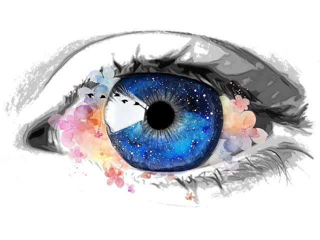
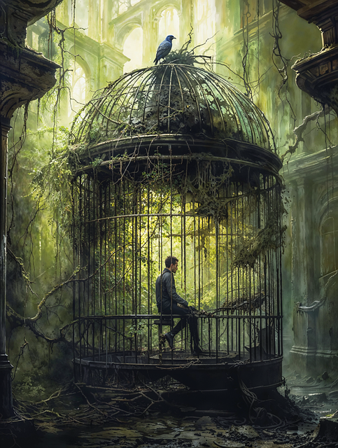
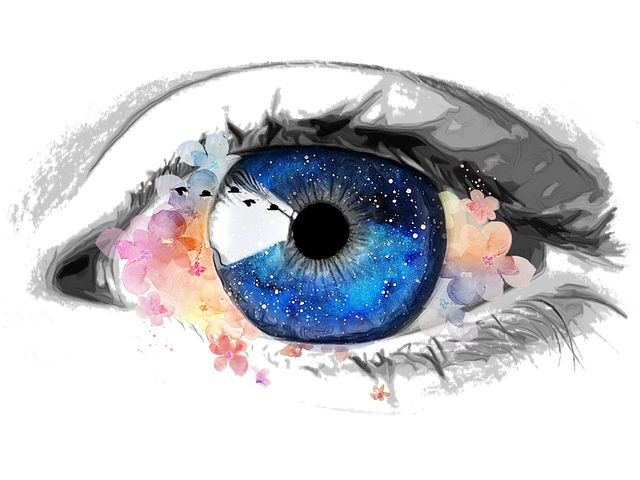
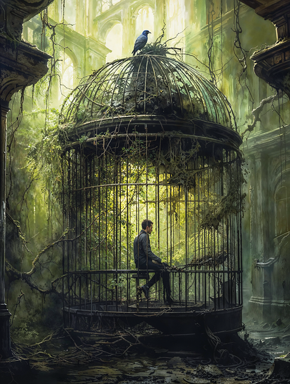

Hat sich Deine Sicht auf Emotionen geändert?
Dreh den Ton an und klicke aufs Auge für einen Belohnungssong der DannyMurillo Production
Willst Du noch mehr über Emotionen lesen oder anschauen?
Hier findest Du weiterführende Links:
Vielen Dank, dass Du meine Website besucht hast.
Has your view of emotions changed?
Turn up the sound and click on the eye for a reward song by DannyMurillo Production
Do you want to read or watch more about emotions?
Here you can find further links:
Thank you for visiting my website.